FunctionalChaosResult¶
- class FunctionalChaosResult(*args)¶
Functional chaos result.
Returned by functional chaos algorithms, see
FunctionalChaosAlgorithm.- Parameters
- model
Function The physical model, that maps the physical input
 to the output
to the output
 .
.- distribution
Distribution Distribution of the random vector

- transformation
Function The function that maps the physical input
to the
standardized input 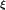.- inverseTransformation
Function The function that maps standardized input to the the physical input
.- composedModel
Function The functional chaos expansion model, that maps the standardized input to the predicted output
 .
This is the composition of the model and the inverseTransformation.
.
This is the composition of the model and the inverseTransformation.- orthogonalBasis
OrthogonalBasis The multivariate orthogonal basis.
- indicessequence of int
The indices of the selected basis function within the orthogonal basis.
- alpha_k2-d sequence of float
The coefficients of the functional chaos expansion.
- Psi_ksequence of
Function The functions of the multivariate basis selected by the algorithm.
- residualssequence of float, 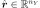
For each output component, the residual is the square root of the sum of squared differences between the model and the meta model, divided by the sample size.
- relativeErrorssequence of float, 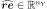
The relative error is the empirical error divided by the sample variance of the output.
- model
Notes
Let
 be the sample size.
Let be the dimension of the output of the
physical model.
For any 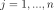 and any 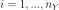,
let 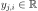 be the output of the physical
model and let be the output of the
metamodel.
For any , let be
the sample output and let 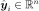 be the
output predicted by the metamodel.
The marginal residual is:
be the sample size.
Let be the dimension of the output of the
physical model.
For any 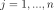 and any 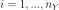,
let 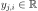 be the output of the physical
model and let be the output of the
metamodel.
For any , let be
the sample output and let 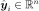 be the
output predicted by the metamodel.
The marginal residual is: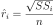
for , where 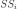 is the marginal sum of squares:
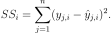
The marginal relative error is:
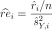
for , where 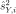 is the unbiased sample variance of the
 -th output.
-th output.This structure is created by the method run() of
FunctionalChaosAlgorithm, and obtained thanks to the getResult() method.Methods
Accessor to the object's name.
Get the coefficients.
Get the composed metamodel.
Get the composed model.
Get the input distribution.
getId()Accessor to the object's id.
Get the indices of the final basis.
Get the inverse isoprobabilistic transformation.
Accessor to the metamodel.
getModel()Accessor to the model.
getName()Accessor to the object's name.
Get the orthogonal basis.
Get the reduced basis.
Accessor to the relative errors.
Accessor to the residuals.
Accessor to the object's shadowed id.
Get the isoprobabilistic transformation.
Accessor to the object's visibility state.
hasName()Test if the object is named.
Test if the object has a distinguishable name.
setMetaModel(metaModel)Accessor to the metamodel.
setModel(model)Accessor to the model.
setName(name)Accessor to the object's name.
setRelativeErrors(relativeErrors)Accessor to the relative errors.
setResiduals(residuals)Accessor to the residuals.
setShadowedId(id)Accessor to the object's shadowed id.
setVisibility(visible)Accessor to the object's visibility state.
- __init__(*args)¶
- getClassName()¶
Accessor to the object’s name.
- Returns
- class_namestr
The object class name (object.__class__.__name__).
- getCoefficients()¶
Get the coefficients.
- Returns
- coefficients2-d sequence of float
Coefficients 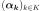.
- getDistribution()¶
Get the input distribution.
- Returns
- distribution
Distribution Distribution of the input random vector
.
- distribution
- getId()¶
Accessor to the object’s id.
- Returns
- idint
Internal unique identifier.
- getIndices()¶
Get the indices of the final basis.
- Returns
- indices
Indices Indices of the elements of the multivariate basis used in the decomposition.
- indices
- getInverseTransformation()¶
Get the inverse isoprobabilistic transformation.
- Returns
- invTransf
Function 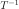 such that 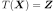.
- invTransf
- getName()¶
Accessor to the object’s name.
- Returns
- namestr
The name of the object.
- getOrthogonalBasis()¶
Get the orthogonal basis.
- Returns
- basis
OrthogonalBasis Factory of the orthogonal basis.
- basis
- getReducedBasis()¶
Get the reduced basis.
- Returns
- basislist of
Function Collection of the K functions 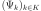 used in the decomposition.
- basislist of
- getRelativeErrors()¶
Accessor to the relative errors.
- Returns
- relativeErrors
Point The relative errors defined as follows for each output of the model: 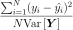 with
the vector of the  model’s values
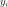 and 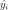 the metamodel’s values.
model’s values
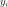 and 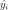 the metamodel’s values.
- relativeErrors
- getResiduals()¶
Accessor to the residuals.
- Returns
- residuals
Point The residual values defined as follows for each output of the model: 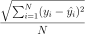 with the
model’s values and the
metamodel’s values.
- residuals
- getShadowedId()¶
Accessor to the object’s shadowed id.
- Returns
- idint
Internal unique identifier.
- getTransformation()¶
Get the isoprobabilistic transformation.
- Returns
- transformation
Function Transformation
 such that .
such that .
- transformation
- getVisibility()¶
Accessor to the object’s visibility state.
- Returns
- visiblebool
Visibility flag.
- hasName()¶
Test if the object is named.
- Returns
- hasNamebool
True if the name is not empty.
- hasVisibleName()¶
Test if the object has a distinguishable name.
- Returns
- hasVisibleNamebool
True if the name is not empty and not the default one.
- setModel(model)¶
Accessor to the model.
- Parameters
- model
Function Physical model approximated by a metamodel.
- model
- setName(name)¶
Accessor to the object’s name.
- Parameters
- namestr
The name of the object.
- setRelativeErrors(relativeErrors)¶
Accessor to the relative errors.
- Parameters
- relativeErrorssequence of float
The relative errors defined as follows for each output of the model: with
the vector of the model’s values
and the metamodel’s values.
- setResiduals(residuals)¶
Accessor to the residuals.
- Parameters
- residualssequence of float
The residual values defined as follows for each output of the model: with the
model’s values and the
metamodel’s values.
- setShadowedId(id)¶
Accessor to the object’s shadowed id.
- Parameters
- idint
Internal unique identifier.
- setVisibility(visible)¶
Accessor to the object’s visibility state.
- Parameters
- visiblebool
Visibility flag.
 .
.